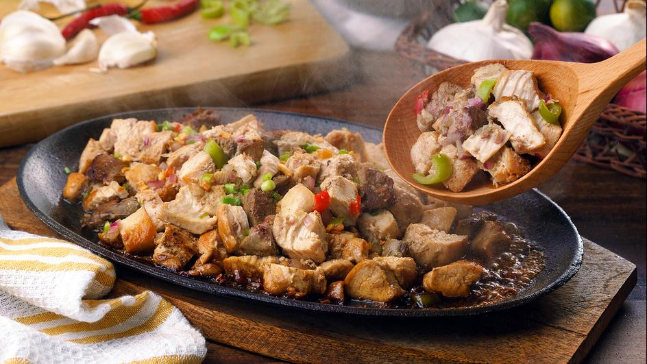
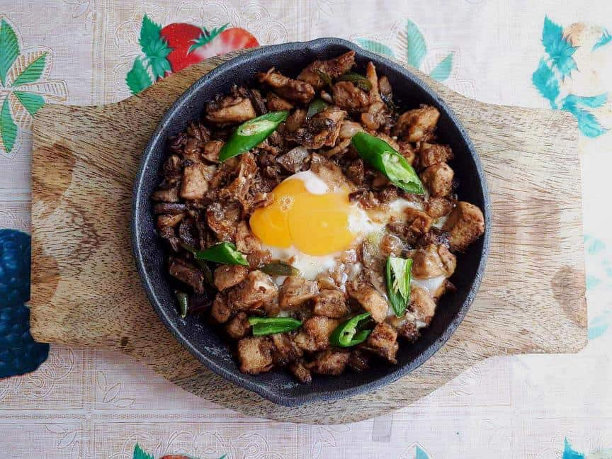

Ingredients:
- 1 1/2 lbs. grilled chicken breast, finely chopped
- 1/4 lb. chicken liver, chopped
- 1 cup minced yellow onion
- 1 teaspoon garlic powder
- 2 pieces serrano pepper, sliced diagonally
- 2 tablespoons soy sauce
- 1/4 cup butter
- 4 to 5 tablespoons mayonnaise
- 1 egg
- Salt and pepper to taste
- 2 tablespoons cooking oil
Step-by-step Instructions:
- Heat the cooking oil in a pan.
- When the oil becomes hot, sauté the onion until it becomes soft.
- Add the chicken liver. Cook until the liver browns.
- Add in the grilled chopped chicken breast. Stir and cook for 3 to 4 minutes.
- Put the garlic powder and soy sauce in. Stir.
- Sprinkle salt and pepper. Stir.
- Add the mayonnaise and then stir right away until all the ingredients are well incorporated.
- Heat the sizzling plate (cast iron pan).
- Once the pan is hot, put the butter in and let it melt.
- Transfer the chicken sisig to the cast iron pan.
- Crack the egg and drop on top of the chicken.
- Arrange the green chili on top.
- Serve. Share and enjoy!